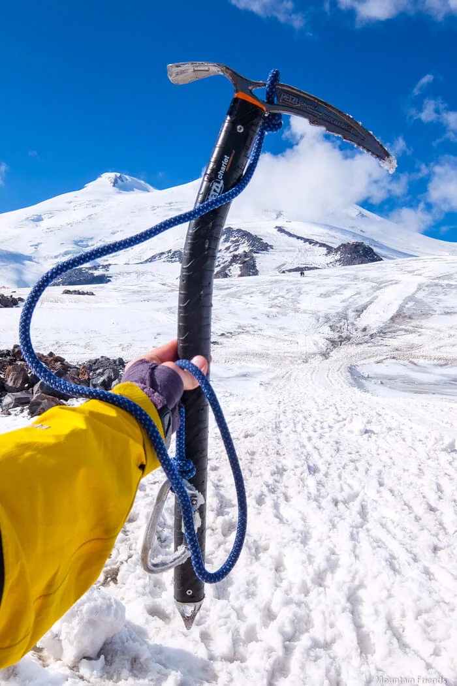

Выбор ледоруба

Ледоруб выбирают не «по бренду», а по задаче: ледниковый трек, классический альпмаршрут или технический кулуар. Для длительных переходов по снегу обычно удобны более длинные модели, которые дают стабильную опору при шаге и самозадержании.
На крутых участках и смешанном рельефе чаще используют более короткий и маневренный инструмент. В этом случае критичны форма клюва, надежность темляка и уверенный хват в перчатках.
Перед покупкой проверьте баланс: инструмент не должен «проваливаться» в кисти носом или рукоятью. Вес должен быть достаточным для контроля удара, но не перегружать руку на длинном наборе высоты.
Обратите внимание на совместимость с остальным снаряжением: перчатки, страховочная система, система крепления на рюкзаке. На маршруте любые мелкие неудобства быстро превращаются в усталость и потерю темпа.
Типичные ошибки новичков: брать слишком тяжелую модель «на вырост», игнорировать длину под рост и использовать один универсальный вариант для всех типов маршрутов. Практичнее иметь понятный приоритет: сначала безопасность и контроль, затем универсальность.
Перед выходом на маршрут сделайте короткую проверку: состояние клюва, отсутствие люфтов, целостность креплений и ремешков. Исправный ледоруб — это не просто инструмент, а ключевой элемент самостраховки.